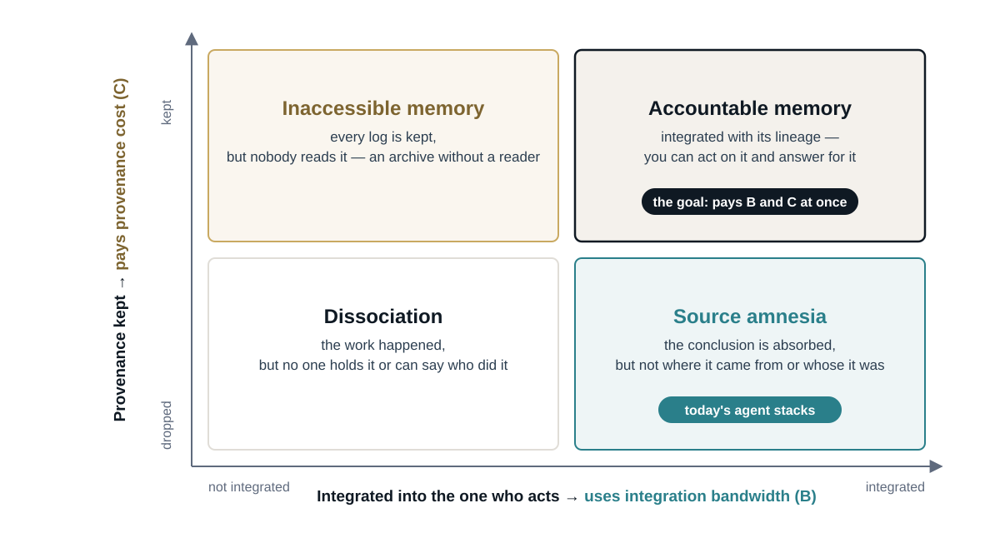

A follow-up to Governance for BMIs and AI Agents. It draws on an ongoing project, Dividual Clones (kagebunshin), on memory and provenance in multi-agent systems.
In my previous post I argued that BMIs widen the bandwidth of expression and AI agents widen the bandwidth of action, and that widening both makes a third bandwidth — reception — the bottleneck. Here I want to look closely at the moment where that bottleneck bites: when the work that branched out comes back.
The shadow clone problem
In the manga Naruto, the shadow clone technique (影分身, kage bunshin) creates copies of the user that act independently. When a clone is dispelled, what it experienced flows back into the original. The catch, well known to fans, is that the fatigue flows back too: dispel too many clones at once and the original is overwhelmed. The limit of the technique is not making clones. It is taking them back in.
This is no longer only a story. An orchestrating agent that spawns sub-agents, lets each build up its own context, and then merges their results is doing exactly this. And proposals for the far future do it more literally still. In his manifesto Phase Lock, Saturnin Pugnet suggests that accelerated whole-brain emulations of a person could supervise an AI at machine speed and then report back at a pace the person can follow. That is a shadow clone of you, watching the machine on your behalf.
Every one of these designs ends with the same step: "report back." That step is usually written in a single sentence. It is where the cost lives.
Two costs of the return
The return has two separate costs.
- Integration bandwidth (B) — how much of what a clone lived through can be folded back into the one who acts and decides. For a person, this is bounded by attention and by a central processing rate that may be as low as about 10 bits per second (Zheng & Meister). For an agent, it is bounded by the context window of whoever does the merging.
- Provenance (C) — the cost of keeping track of where each piece came from: which clone did it, under what instruction, from which source, and why it turned out that way. This is the cost of storing that record, verifying it, and reading it.
These two costs are not independent. Provenance is itself information that has to be integrated. Every line of "who did what and why" that comes back competes for the same narrow channel as the result it describes. The more carefully we keep the record, the more of the bandwidth the record consumes.
Four ways the return can go
Whether we integrate what comes back, and whether we keep its provenance, gives four regimes (Figure 1).

- Dissociation — nothing is integrated and nothing is traced. Work happened, but no one holds it and no one can say who did it.
- Inaccessible memory — every log is kept, but nobody reads it. The archive is complete and has no reader.
- Source amnesia — the conclusion is absorbed, but where it came from is lost. You know what you believe and not why, or whose belief it originally was.
- Accountable memory — the result is integrated and its lineage is kept, so you can both act on it and answer for it.
Today's agent stacks mostly sit in source amnesia, running at machine speed. A summary arrives without its lineage, and we act on it. Accountable memory is the corner we want, and it is the expensive one, because it asks us to pay B and C at the same time.
Forgetting as a governed act
If we cannot afford to keep everything and read everything, something has to be let go. The question is whether that happens by accident or by decision.
Archival science has dealt with this for a long time. Archivists appraise records when they are created, deciding what is worth keeping. They set retention schedules that say how long each kind of record is kept, and they carry out scheduled disposal when that time is up. Forgetting becomes an act someone is responsible for, rather than a failure that happens to us.
Brought into a multi-agent system, this does more than pick a point between B and C. A record that will be disposed of on a known schedule does not have to be read now; what remains stays small enough to be read. Disposal, done on purpose, is what keeps provenance affordable. This is what I meant by memory governance in the harness: deciding what is kept, what is discarded, and who inherits it, before the clones come home rather than after.
Whose clone is it?
There is one more layer. In Japanese, bunshin (分身, a divided body, a clone) and bunjin (分人, the "dividual" — Hirano Keiichiro's term for the many selves a person is across their relationships) share the same first character, 分: to divide. Anthropology has a parallel line of thought in Marilyn Strathern's dividual person, made up of relations rather than sealed inside a single body.
If clones are parts of a self rather than tools held by one, provenance changes meaning. It stops being external bookkeeping and becomes part of the upkeep of a self: knowing which of my clones did this, and on what basis, is part of knowing what I did. Accountability then attaches not only to the person at the top but to the line that runs from each clone back to them.
For LLM agents, this can sound like a metaphor. For the brain emulations Pugnet describes, it is not. An emulation of you that has spent a thousand subjective hours supervising a machine comes back with experience that is yours and that you did not live. How much of it you take in, and how much of its lineage you keep, decides what kind of person you are afterward.
What this means
Faster interfaces do not remove this problem, and neither does faster cognition. Copying yourself multiplies it: more clones, more experience coming back, the same single point of return. Whatever widens expression and action ends up here.
So the return path has to be designed, not assumed. For each kind of work, we should choose deliberately where it sits among the four regimes: what must come back with its lineage intact, what can come back as a bare result, and what can be appraised away. That choice is an institutional one. It is the reporting and memory side of the harness, and it is the part of the loop between humans and AI that no amount of bandwidth will design for us.